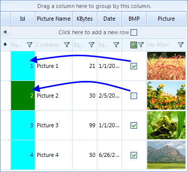

Formatting Cells
CellFormatting
| RELATED VIDEOS | |
| [Formatting Data In RadGridView for WinForms](http://tv.telerik.com/radtips/radgrid/formatting-data-in-radgridview) In this RadTip, John Kellar demonstrates how you can apply custom formatting to data within a RadGridView for Windows Forms. (Runtime: 09:14) |  |
CellFormatting event is used to add formatting to grid data cells including the
new row cells. For example, the code sample below changes the ForeColor in all cells in the "KBytes" column
to red:
Due to the UI virtualization in RadGridView, cell elements are created only for currently visible cells and are being reused
during operations like scrolling, filtering, grouping and so on.
In order to prevent applying the formatting to other columns' cell elements (because of the cell reuse) all customization should be
reset for the rest of the cell elements
Please refer to the Fundamentals
topic
for more information.
Example: Changing the data cells font color
[C#] Formatting cells fore color
void radGridView1_CellFormatting1(object sender, Telerik.WinControls.UI.CellFormattingEventArgs e)
{
if (e.CellElement.ColumnInfo.Name == "KBytes")
{
e.CellElement.ForeColor = Color.Red;
}
else
{
e.CellElement.ResetValue(LightVisualElement.ForeColorProperty, ValueResetFlags.Local);
}
}
[VB.NET] Formatting cells fore color
Private Sub RadGridView1_CellFormatting1(ByVal sender As Object, ByVal e As Telerik.WinControls.UI.CellFormattingEventArgs) Handles RadGridView1.CellFormatting
If e.CellElement.ColumnInfo.Name = "KBytes" Then
e.CellElement.ForeColor = Color.Red
Else
e.CellElement.ResetValue(LightVisualElement.ForeColorProperty, ValueResetFlags.Local)
End If
End Sub

Example: Cells background formatting
This is an advanced example of using CellFormatting event to highlight certain cells in red color based on
the values of cells in the same row but different column. In the example, the values in the first column are
highlighted if the value in the check box column returns true:

[C#] Formatting cells
void radGridView1_CellFormatting2(object sender, Telerik.WinControls.UI.CellFormattingEventArgs e)
{
if (e.CellElement.ColumnInfo.HeaderText == "Id")
{
if (e.CellElement.RowInfo.Cells["BMP"].Value != null)
{
if ((bool)e.CellElement.RowInfo.Cells["BMP"].Value == true)
{
e.CellElement.DrawFill = true;
e.CellElement.ForeColor = Color.Blue;
e.CellElement.NumberOfColors = 1;
e.CellElement.BackColor = Color.Aqua;
}
else
{
e.CellElement.DrawFill = true;
e.CellElement.ForeColor = Color.Yellow;
e.CellElement.NumberOfColors = 1;
e.CellElement.BackColor = Color.Green;
}
}
}
else
{
e.CellElement.ResetValue(LightVisualElement.DrawFillProperty, ValueResetFlags.Local);
e.CellElement.ResetValue(LightVisualElement.ForeColorProperty, ValueResetFlags.Local);
e.CellElement.ResetValue(LightVisualElement.NumberOfColorsProperty, ValueResetFlags.Local);
e.CellElement.ResetValue(LightVisualElement.BackColorProperty, ValueResetFlags.Local);
}
}
[VB.NET] Formatting cells
Private Sub RadGridView1_CellFormatting2(ByVal sender As Object, ByVal e As Telerik.WinControls.UI.CellFormattingEventArgs) Handles RadGridView1.CellFormatting
If e.CellElement.ColumnInfo.HeaderText = "Id" Then
If e.CellElement.RowInfo.Cells("BMP").Value IsNot Nothing Then
If CBool(e.CellElement.RowInfo.Cells("BMP").Value) = True Then
e.CellElement.DrawFill = True
e.CellElement.ForeColor = Color.Blue
e.CellElement.NumberOfColors = 1
e.CellElement.BackColor = Color.Aqua
Else
e.CellElement.DrawFill = True
e.CellElement.ForeColor = Color.Yellow
e.CellElement.NumberOfColors = 1
e.CellElement.BackColor = Color.Green
End If
End If
Else
e.CellElement.ResetValue(LightVisualElement.DrawFillProperty, ValueResetFlags.Local)
e.CellElement.ResetValue(LightVisualElement.ForeColorProperty, ValueResetFlags.Local)
e.CellElement.ResetValue(LightVisualElement.NumberOfColorsProperty, ValueResetFlags.Local)
e.CellElement.ResetValue(LightVisualElement.BackColorProperty, ValueResetFlags.Local)
End If
End Sub
ViewCellFormatting - formatting non-data cells
While CellFormatting event is fired only for data cells, ViewCellFormatting is fired for all RadGridView cells.
So if you want to format the grouping row or the header cells, you should use the ViewCellFormatting event.
Example: Change group and header cells font and removing the default filter operator text
For example, to change the font of the header cells and the group cells use the following code:
[C#] Formatting non-data rows
Font newFont = new Font("Arial", 12f, FontStyle.Bold);
void radGridView1_ViewCellFormatting1(object sender, CellFormattingEventArgs e)
{
if (e.CellElement is GridHeaderCellElement || e.CellElement is GridGroupContentCellElement)
{
e.CellElement.Font = newFont;
e.CellElement.ForeColor = Color.Blue;
}
else
{
e.CellElement.ResetValue(LightVisualElement.FontProperty, ValueResetFlags.Local);
e.CellElement.ResetValue(LightVisualElement.ForeColorProperty, ValueResetFlags.Local);
}
//hiding the text from the filter cells
GridFilterCellElement filterCell = e.CellElement as GridFilterCellElement;
if (filterCell != null)
{
filterCell.FilterOperatorText.Visibility = Telerik.WinControls.ElementVisibility.Collapsed;
}
}
[VB.NET] Formatting non-data rows
Dim newFont = New Font("Arial", 12.0F, FontStyle.Bold)
Private Sub RadGridView1_ViewCellFormatting1(ByVal sender As Object, ByVal e As Telerik.WinControls.UI.CellFormattingEventArgs) Handles RadGridView1.ViewCellFormatting
If TypeOf e.CellElement Is GridHeaderCellElement OrElse TypeOf e.CellElement Is GridGroupContentCellElement Then
e.CellElement.Font = newFont
e.CellElement.ForeColor = Color.Blue
Else
e.CellElement.ResetValue(LightVisualElement.FontProperty, ValueResetFlags.Local)
e.CellElement.ResetValue(LightVisualElement.ForeColorProperty, ValueResetFlags.Local)
End If
'hiding the text from the filter cells
Dim filterCell As GridFilterCellElement = TryCast(e.CellElement, GridFilterCellElement)
If filterCell IsNot Nothing Then
filterCell.FilterOperatorText.Visibility = Telerik.WinControls.ElementVisibility.Collapsed
End If
End Sub

Example 2: Change TextAlignment and BackColor of group rows
To modify the text alignment and the back color in the group rows use the following code snippet:
[C#] Formatting non-data rows
void radGridView1_ViewCellFormatting2(object sender, CellFormattingEventArgs e)
{
if (e.CellElement.RowInfo is GridViewGroupRowInfo)
{
e.CellElement.DrawFill = true;
e.CellElement.BackColor = Color.Aquamarine;
e.CellElement.TextAlignment = ContentAlignment.MiddleRight;
e.CellElement.GradientStyle = Telerik.WinControls.GradientStyles.Solid;
}
else
{
e.CellElement.ResetValue(LightVisualElement.DrawFillProperty, ValueResetFlags.Local);
e.CellElement.ResetValue(LightVisualElement.BackColorProperty, ValueResetFlags.Local);
e.CellElement.ResetValue(LightVisualElement.TextAlignmentProperty, ValueResetFlags.Local);
e.CellElement.ResetValue(LightVisualElement.GradientStyleProperty, ValueResetFlags.Local);
}
}
[VB.NET] Formatting non-data rows
Private Sub RadGridView1_ViewCellFormatting2(ByVal sender As Object, ByVal e As Telerik.WinControls.UI.CellFormattingEventArgs) Handles RadGridView1.ViewCellFormatting
If TypeOf e.CellElement.RowInfo Is GridViewGroupRowInfo Then
e.CellElement.DrawFill = True
e.CellElement.BackColor = Color.Aquamarine
e.CellElement.TextAlignment = ContentAlignment.MiddleRight
e.CellElement.GradientStyle = Telerik.WinControls.GradientStyles.Solid
Else
e.CellElement.ResetValue(LightVisualElement.DrawFillProperty, ValueResetFlags.Local)
e.CellElement.ResetValue(LightVisualElement.BackColorProperty, ValueResetFlags.Local)
e.CellElement.ResetValue(LightVisualElement.TextAlignmentProperty, ValueResetFlags.Local)
e.CellElement.ResetValue(LightVisualElement.GradientStyleProperty, ValueResetFlags.Local)
End If
End Sub

In certain cases, where a custom layout is needed (for example, when you want to place RadCheckBoxElement in a specific place in a header cell)
you should create your own type of cell instead of using ViewCellFormatting. Such an example is demonstrated in this knowledge base article.
Example 3: Change the appearance of the buttons in GridViewCommandColumn
Sometimes, you may need to change the appearance of the buttons that appear in the cells of
the GridViewCommandColumn. These buttons are children of the RadGridView cells, so in order to access them,
you should take them from the Children collection of the visual cells. We will demonstrate how this should be
done by analyzing the following case.
Let's say that you have a number of employees. Only one employee is Vice President of the company,
while the others are managers and sales representatives. In RadGridView you have a
GridViewCommandColumn, the buttons of which allow
the end-users to edit the details of all records, except the one that belongs to the Vice President.
So, depending on the value of the Title cell, you should set the Enabled property
of the respective RadButtonElement to true or false.
Here is how we can achieve that:
[C#]
void radGridView1_CellFormatting(object sender, CellFormattingEventArgs e)
{
if (e.CellElement.ColumnInfo is GridViewCommandColumn)
{
// This is how we get the RadButtonElement instance from the cell
RadButtonElement button = (RadButtonElement)e.CellElement.Children[0];
if (e.CellElement.RowInfo.Cells["Title"].Value != null)
{
string title = e.CellElement.RowInfo.Cells["Title"].Value.ToString();
if (title == "Vice President, Sales")
{
button.Enabled = false;
}
else
{
button.Enabled = true;
}
}
}
}
[VB.NET]
Private Sub radGridView1_CellFormatting(ByVal sender As Object, ByVal e As CellFormattingEventArgs) Handles RadGridView1.CellFormatting
If TypeOf e.CellElement.ColumnInfo Is GridViewCommandColumn Then
'This is how we get the RadButtonElement instance from the cell
Dim button As RadButtonElement = CType(e.CellElement.Children(0), RadButtonElement)
If e.CellElement.RowInfo.Cells("Title").Value IsNot Nothing Then
Dim title As String = e.CellElement.RowInfo.Cells("Title").Value.ToString()
If title = "Vice President, Sales" Then
button.Enabled = False
Else
button.Enabled = True
End If
End If
End If
End Sub
'#End Region
End Class
And this is how the result looks:

Example 4: Hiding child tabs when no data is available
When RadGridView displays hierarchical data, you expand/collapse child levels in the hierarchy with the help of
GridGroupExpanderCellElement containing an expand/collapse image. If you have more than one template at a specific child level,
these templates are displayed by using the GridDetailViewCellElement. Consider the RadGridView has two
child templates under the master template. If you expand the parent row, two tabs will be displayed for the respective child level.
However, some of the child tabs may not contain any data. This example demonstrates a sample approach how to hide the child tabs if no data is available.
If none of the child tabs for a specific parent row contains any data, the expander image will be hidden.
In order for a GridDetailViewCellElement to display a page view instead of a single table element, either the template of the row holding
it has to have more than one child template, or its ShowChildViewCaptions should be true.
Once there is a page view, the tabs in it will be visible at all times, except when some of the templates has no rows and
AllowAddNewRow for it is false – if it does not have any rows and the user cannot add row,
it is considered that there is no need from it.

[C#]
private void radGridView1_ViewCellFormatting(object sender, CellFormattingEventArgs e)
{
GridDetailViewCellElement cell = e.CellElement as GridDetailViewCellElement;
GridGroupExpanderCellElement expanderCell = e.CellElement as GridGroupExpanderCellElement;
if (expanderCell != null && e.CellElement.RowElement is GridDataRowElement)
{
GridViewHierarchyRowInfo hierarchyRow = (GridViewHierarchyRowInfo)expanderCell.RowInfo;
if (!IsExpandable(hierarchyRow))
{
expanderCell.Expander.Visibility = Telerik.WinControls.ElementVisibility.Hidden;
}
else
{
expanderCell.Expander.Visibility = Telerik.WinControls.ElementVisibility.Visible;
}
}
else if (cell != null)
{
GridViewHierarchyRowInfo hierarchyRow = (GridViewHierarchyRowInfo)((GridViewDetailsRowInfo)cell.RowInfo).Owner;
for (int i = 0; i < cell.PageViewElement.Items.Count; i++)
{
RadPageViewItem item = cell.PageViewElement.Items[i];
GridViewInfo viewInfo = hierarchyRow.Views[i];
item.Text = "Child Template " + i;
if (viewInfo.ChildRows.Count == 0)
{
if (i == 0 && i < cell.PageViewElement.Items.Count - 1)
{
cell.PageViewElement.Items[i + 1].IsSelected = true;
}
item.Visibility = Telerik.WinControls.ElementVisibility.Collapsed;
}
else
{
item.Visibility = Telerik.WinControls.ElementVisibility.Visible;
}
}
}
}
private bool IsExpandable(GridViewHierarchyRowInfo hierarchyRow)
{
foreach (GridViewInfo view in hierarchyRow.Views)
{
if (view.ChildRows.Count > 0)
{
return true;
}
}
return false;
}
[VB.NET]
Private Sub radGridView1_ViewCellFormatting(sender As Object, e As CellFormattingEventArgs)
Dim cell As GridDetailViewCellElement = TryCast(e.CellElement, GridDetailViewCellElement)
Dim expanderCell As GridGroupExpanderCellElement = TryCast(e.CellElement, GridGroupExpanderCellElement)
If expanderCell IsNot Nothing AndAlso TypeOf e.CellElement.RowElement Is GridDataRowElement Then
Dim hierarchyRow As GridViewHierarchyRowInfo = DirectCast(expanderCell.RowInfo, GridViewHierarchyRowInfo)
If Not IsExpandable(hierarchyRow) Then
expanderCell.Expander.Visibility = Telerik.WinControls.ElementVisibility.Hidden
Else
expanderCell.Expander.Visibility = Telerik.WinControls.ElementVisibility.Visible
End If
ElseIf cell IsNot Nothing Then
Dim hierarchyRow As GridViewHierarchyRowInfo = DirectCast(DirectCast(cell.RowInfo, GridViewDetailsRowInfo).Owner, GridViewHierarchyRowInfo)
For i As Integer = 0 To cell.PageViewElement.Items.Count - 1
Dim item As RadPageViewItem = cell.PageViewElement.Items(i)
Dim viewInfo As GridViewInfo = hierarchyRow.Views(i)
item.Text = "Child Template " & i
If viewInfo.ChildRows.Count = 0 Then
If i = 0 AndAlso i < cell.PageViewElement.Items.Count - 1 Then
cell.PageViewElement.Items(i + 1).IsSelected = True
End If
item.Visibility = Telerik.WinControls.ElementVisibility.Collapsed
Else
item.Visibility = Telerik.WinControls.ElementVisibility.Visible
End If
Next
End If
End Sub
Private Function IsExpandable(hierarchyRow As GridViewHierarchyRowInfo) As Boolean
For Each view As GridViewInfo In hierarchyRow.Views
If view.ChildRows.Count > 0 Then
Return True
End If
Next
Return False
End Function
'#End Region
End Class
Public Class Car
Public Property Id() As Integer
Get
Return m_Id
End Get
Set(value As Integer)
m_Id = value
End Set
End Property
Private m_Id As Integer
Public Property Title() As String
Get
Return m_Title
End Get
Set(value As String)
m_Title = value
End Set
End Property
Private m_Title As String
Public Sub New(id As Integer, title As String)
Me.Id = id
Me.Title = title
End Sub
End Class
Public Class Part
Public Property Id() As Integer
Get
Return m_Id
End Get
Set(value As Integer)
m_Id = value
End Set
End Property
Private m_Id As Integer
Public Property PartName() As String
Get
Return m_PartName
End Get
Set(value As String)
m_PartName = value
End Set
End Property
Private m_PartName As String
Public Property CarId() As Integer
Get
Return m_CarId
End Get
Set(value As Integer)
m_CarId = value
End Set
End Property
Private m_CarId As Integer
Public Sub New(id As Integer, name As String, carId As Integer)
Me.Id = id
Me.PartName = name
Me.CarId = carId
End Sub
End Class
Public Class Service
Public Property Id() As Integer
Get
Return m_Id
End Get
Set(value As Integer)
m_Id = value
End Set
End Property
Private m_Id As Integer
Public Property ServiceName() As String
Get
Return m_ServiceName
End Get
Set(value As String)
m_ServiceName = value
End Set
End Property
Private m_ServiceName As String
Public Property CarId() As Integer
Get
Return m_CarId
End Get
Set(value As Integer)
m_CarId = value
End Set
End Property
Private m_CarId As Integer
Public Sub New(id As Integer, srviceName As String, carId As Integer)
Me.Id = id
Me.ServiceName = srviceName
Me.CarId = carId
End Sub
End Class
Formatting cells on demand
Sometimes you may need to format the cells on a specific user action, for example, on a button click.
Let's take the following scenario: you have a search box (RadTextBox) above RadGridView and a RadButton.
When you click the button, RadGridView should highlight the cells that match the text typed in the RadTextBox.
Here is how to do it:
- First, you should handle the CellFormatting event of RadGridView, setting the back color of those cells that have text that matches the text of RadTextBox
[C#]
void radGridView1_CellFormatting(object sender, Telerik.WinControls.UI.CellFormattingEventArgs e)
{
if (e.CellElement.Text == this.radTextBox1.Text)
{
e.CellElement.DrawFill = true;
e.CellElement.BackColor = Color.Yellow;
e.CellElement.GradientStyle = Telerik.WinControls.GradientStyles.Solid;
}
else
{
e.CellElement.ResetValue(LightVisualElement.DrawFillProperty, Telerik.WinControls.ValueResetFlags.Local);
e.CellElement.ResetValue(VisualElement.BackColorProperty, ValueResetFlags.Local);
e.CellElement.ResetValue(LightVisualElement.GradientStyleProperty, ValueResetFlags.Local);
}
}
[VB.NET]
Private Sub RadGridView1_CellFormatting(ByVal sender As Object, ByVal e As Telerik.WinControls.UI.CellFormattingEventArgs) Handles RadGridView1.CellFormatting
If e.CellElement.Text = Me.RadTextBox1.Text Then
e.CellElement.DrawFill = True
e.CellElement.BackColor = Color.Yellow
e.CellElement.GradientStyle = Telerik.WinControls.GradientStyles.Solid
Else
e.CellElement.ResetValue(LightVisualElement.DrawFillProperty, Telerik.WinControls.ValueResetFlags.Local)
e.CellElement.ResetValue(VisualElement.BackColorProperty, ValueResetFlags.Local)
e.CellElement.ResetValue(LightVisualElement.GradientStyleProperty, ValueResetFlags.Local)
End If
End Sub
- Now comes the tricky part. The user types some text, but then we should somehow notify RadGridView that it needs to refresh itself. This is done by calling the Update method of the TableElement, passing the StateChanged argument as a parameter.
[C#]
void searchButton_Click(object sender, EventArgs e)
{
this.radGridView1.TableElement.Update(GridUINotifyAction.StateChanged);
}
[VB.NET]
Private Sub searchButton_Click(ByVal sender As Object, ByVal e As System.EventArgs) Handles searchButton.Click
Me.RadGridView1.TableElement.Update(GridUINotifyAction.StateChanged)
End Sub
As a result of the Update call, the CellFormatting (and the other formatting events as well) will be fired and you will
get the screenshot shown below:

Format cell with Style property
The GridViewCellInfo Style property gives direct access to the
cell’s visual properties. It makes it possible to set styles to cells in runtime without
using events like CellFormatting or the ConditionalFormattingObject.
This approach lets you customize visual properties which are defined by the theme.
All changes set this way will have a greater priority than the theme.
The first thing to do for using the cell’s Style is to
define what custom visual properties will use this cell. You can define that the cell will:
CustomizeFill
CustomizeBorder
Using the Style property allows you to define cell’s style properties:
Fill
Border
Font
ForeColor
The example below shows how to customize the Font and
BackColor of RadGridView cell.
[C#] Formatting cells vie Style property
Font myFont = new Font(new FontFamily("Calibri"), 12.0F, FontStyle.Bold);
private void StyleCell(GridViewCellInfo cell)
{
cell.Style.Font = myFont;
cell.Style.CustomizeFill = true;
cell.Style.GradientStyle = GradientStyles.Solid;
cell.Style.BackColor = Color.FromArgb(162, 215, 255);
}
[VB.NET] Formatting cells vie Style property
Me.StyleCell(Me.RadGridView1.Rows(1).Cells(1))
Here is how to call this method of a certain cell:
[C#] Call StyleCell method
this.StyleCell(this.radGridView1.Rows[1].Cells[1]);
[VB.NET] Call StyleCell method
Me.StyleCell(Me.RadGridView1.Rows(1).Cells(1))